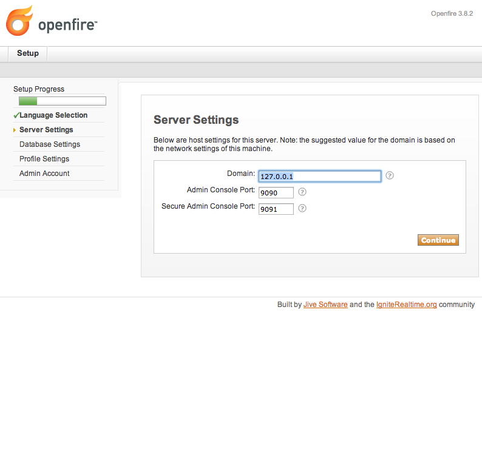
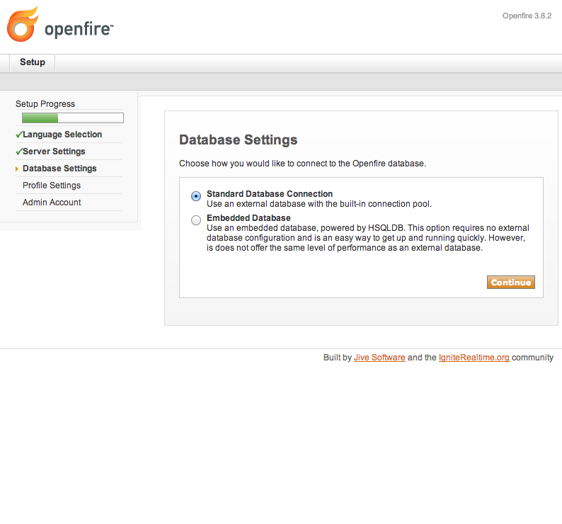
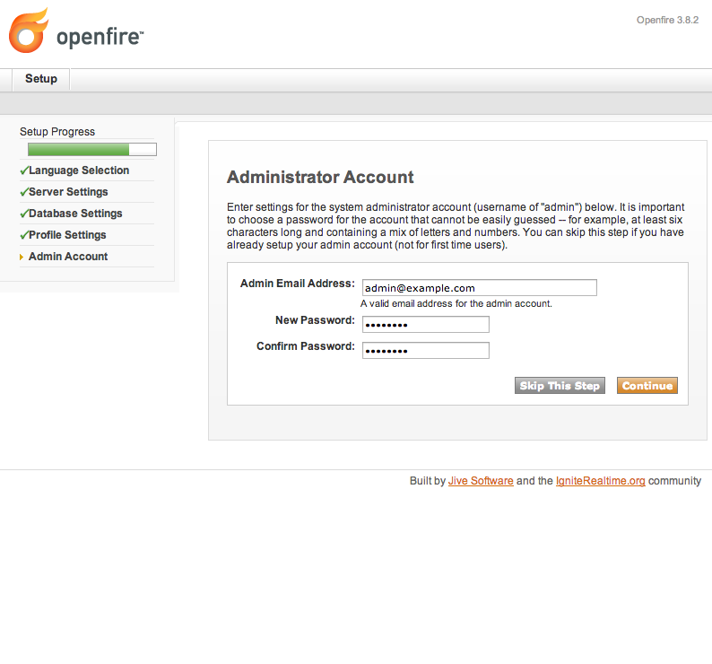

XMPP調査報告書
XMPPとは
-
XMLをベースにしたプロトコルの一種
-
主にIM(Instant Messenger)やIRC向けに使われる
利用実績
Google talk
Facebookのチャット
iChat Server
具体的なメッセージング
XMPPを実装したOSSプロダクト
サーバ側のプロダクト
Apache Vysper(Apache License2.0、Java実装)
Openfire(Apache License、Java実装)
Metronome IM(ISC/MIT、Lua実装?)
Prosody(MIT/X11、Lua実装)
...etc→参考サイト
未調査項目
スケール(多数のコネクションに対応する)
リアルタイム性
その他デバイス毎の利用可否、実装方法
セキュリティ、通信経路上の暗号化
openfire導入メモ
動作要件
- JDK(5+?)
- Database
-
- Oracle
- SQLServer
- PostgreSQL
- DB2
- HSQLDB
MySQL
Linuxへのインストール手順 1
- 本家のダウンロードリンクからrpmをダウンロード
- rpmコマンドでインストール
Linuxへのインストール手順 2
- 本家の案内を元にDB毎に設定
- MySQLの場合
- create database openfire;
- GRANT ALL ON openfire.* TO openfire_admin IDENTIFIED BY 'openfire';
- GRANT ALL ON openfire.* TO openfire_admin@'localhost' IDENTIFIED BY 'openfire';
- cat openfire_mysql.sql | mysql openfire;
SQLが通らない場合にはVARCHAR(1024)をVARCHAR(255)に書き換える。
Linuxへのインストール手順 3
- /etc/init.d/openfire start
- http://hostname:9090/にブラウザからアクセス
Linuxへのインストール手順 4
言語設定

Linuxへのインストール手順 5
サーバ設定
Linuxへのインストール手順 6
DB選択
Linuxへのインストール手順 7
DB接続情報

Linuxへのインストール手順 8
ユーザプロファイル情報

Linuxへのインストール手順 9
管理ユーザ設定
Use a spacebar or arrow keys to navigate